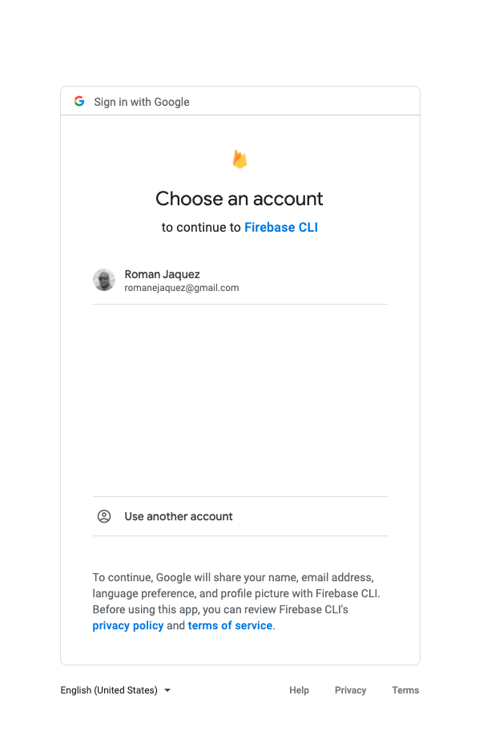
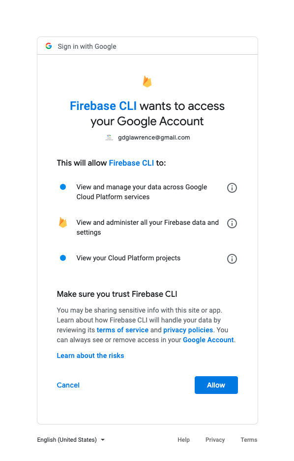
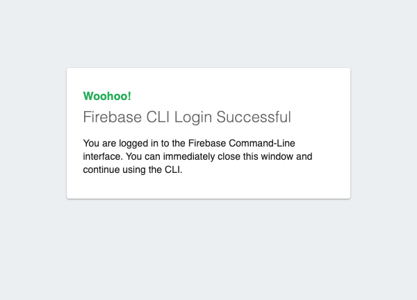
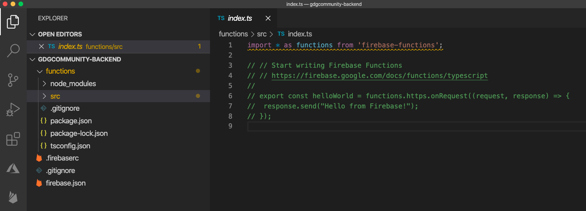
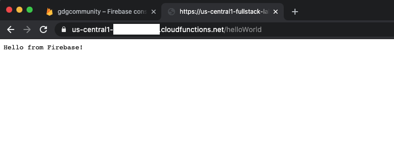
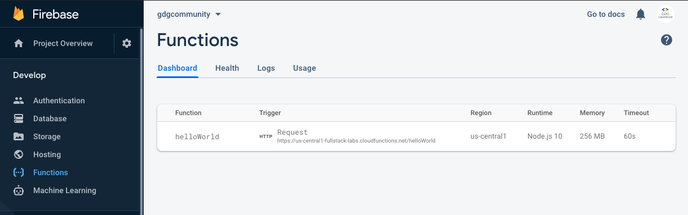
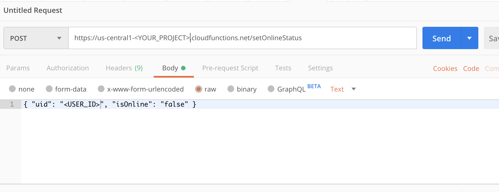
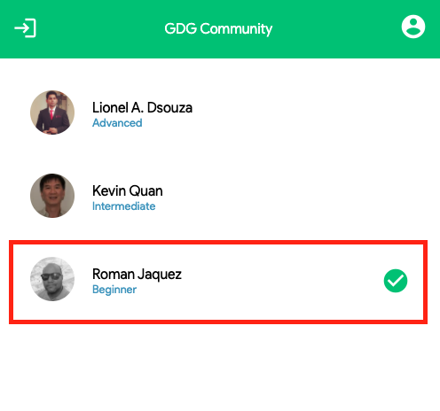

This codelab provides the tutorial on how to create a backend for the GDG Community project using Cloud Functions for Firebase.
You'll be able create your own APIs all hosted securely in the Google Cloud, and managed via your Firebase Console. You will leverage the power of Node.JS and Express under the hood through Cloud Functions for Firebase and how to access your data already stored in Cloud Firestore through these versatile serverless approach.
Make sure you are able to run firebase commands by confirming that you have the Firebase CLI installed on your machine.
firebase --version
As of this writing, the latest version of Firebase is 8.5.0. If you haven't installed it, do the following:
npm install -g firebase-tools
Firebase CLI needs you to be authorized in order to perform some actions on your behalf: deploy files, set configuration files, execute code, etc.
Let's create a separate folder, outside of the GDG Community Project. Let's call it gdgcommunity-backend.
Through a terminal or Visual Studio's command line, access the folder above, then at the root of that folder, execute the following command:
firebase login
You get the following prompt in the command line. Select NO on Allowing Firebase to collect CLI usage.
i Firebase optionally collects CLI usage and error reporting information to help improve our products. Data is collected in accordance with Google's privacy policy (https://policies.google.com/privacy) and is not used to identify you.
? Allow Firebase to collect CLI usage and error reporting information? No
Then you will notice that a browser window pops up, prompting you to select the account under which your Firebase project was created. Select the corresponding account.

Then you're prompted to allow Firebase CLI to access your Google Account and authorize you.

Subsequently, you'll get a confirmation.

Waiting for authentication...
✔ Success! Logged in as gdglawrence@gmail.com
After this, you can close the browser window and go back to the command line window.
Inside a terminal or Visual Studio's command line, at the root of this folder, execute the following command:
firebase init
This will initialize your Firebase project. Immediately you notice some activity in the command line and you'll start receiving prompts.
The first prompt asks what features you want to set up from Firebase. You can select multiple, but for now we'll go with just Functions. Use the Space Bar to select, and Enter to confirm.
? Which Firebase CLI features do you want to set up for this folder? Press Space to select features, then Enter to confirm
your choices.
◯ Database: Deploy Firebase Realtime Database Rules
◯ Firestore: Deploy rules and create indexes for Firestore
❯◉ Functions: Configure and deploy Cloud Functions
◯ Hosting: Configure and deploy Firebase Hosting sites
◯ Storage: Deploy Cloud Storage security rules
◯ Emulators: Set up local emulators for Firebase features
Next you get the prompt for the Functions Setup. Select Typescript.
=== Functions Setup
A functions directory will be created in your project with a Node.js
package pre-configured. Functions can be deployed with firebase deploy.
? What language would you like to use to write Cloud Functions?
JavaScript
❯ TypeScript
Next, it asks about TSLint. Let's say No (n) for now:
? Do you want to use TSLint to catch probable bugs and enforce style? (Y/n) n
✔ Wrote functions/package.json
✔ Wrote functions/tsconfig.json
✔ Wrote functions/src/index.ts
✔ Wrote functions/.gitignore
Next, mark Yes (Y) on installing NPM dependencies:
? Do you want to install dependencies with npm now? (Y/n) Y
i Writing configuration info to firebase.json...
i Writing project information to .firebaserc...
i Writing gitignore file to .gitignore...
After that, your Firebase project should be initialized:
✔ Firebase initialization complete!
In Visual Studio, after you initialize the project, you end up with a project structure like the following:

You can inspect the files at your leisure, but we will only be working mainly on the index.ts file located inside the functions/src folder.
Let's inspect this file. Notice we are importing the firebase-functions package and importing everything into an alias called functions.
Proceed to uncomment the rest of the code, where here we are defining a function called helloWorld. Notice how we are using the https API from the functions package, which has a hook method called onRequest which allows to attach a callback method. The onRequest hook method allows you to invoke your callback method as a reponse to an HTTP request to a RESTful API method called helloWorld.
export const helloWorld = functions.https.onRequest((request, response) => {
response.send("Hello from Firebase");
});
Notice we are tapping into the reponse parameter provided via the callback method. The request and response parameters are into the Express framework, a popular framework for building RESTful APIs using Node.JS. More info on Express here.
Every method maps to a function. You can have more than one method within the same file, but it is advised to have a method per file. In our case, the method is called helloWorld and we export it (export const helloWorld), which will make it available as a separate Cloud Function.
Now that you've uncommented the code and have dissected the function (although it's a very simple case) you can use this method and deploy it in order to test it out.
On the command line, execute the following command:
firebase deploy
This will trigger the deployment process of your function up to your Firebase project in Firebase Console.
NOTE: IN ORDER TO DEPLOY FUNCTIONS INTO FIREBASE, YOU MUST UPGRADE YOUR ACCOUNT FROM FREE (SPARK) TO PAY-AS-YOU-GO (BLAZE) OR DEPLOYMENTS WILL FAIL.
Once deployment succeeds, you can invoke your newly deployed function. The syntax of your RESTful API method will be: https://us-central1-.cloudfunctions.net/helloWorld when you invoke it.
Once the invocation succeeds, you will get as a response the string "Hello World", whether you invoke it via the browser, or perform a curl on this URL.

Navigate to your Firebase Console portal. On the left hand navigation of the portal, find the Functions navigation item; click on it. On the right hand side, you will see the Functions page. Select the Dashboard tab, and you will notice that your deploy function is there. Also notice under the Trigger function it specifies what the trigger of this function is; in our case, it is an HTTP Request, since we tapped into the functions.https API of the Firebase Functions.

Now that we know how to create a simple Cloud Function, how to deploy it and how to invoke it, let's repurpose it for our needs. We need an RESTful API function that by us sending the authenticated user id, it can find us in the Cloud Firestore, and change the isOnline status to whatever we want to set it to (true or false).
Let's navigate again to the functions/src/index.ts file and copy / paste the code below:
const functions = require('firebase-functions');
const admin = require('firebase-admin');
admin.initializeApp();
const db = admin.firestore();
exports.setOnlineStatus = functions.https.onRequest((request: any, response: any) => {
if (request.body.uid) {
db.collection('community').doc(request.body.uid).set({
isOnline: request.body.isOnline
}, { merge: true }).then(() => {
response.status(200).json({
success: true
});
}).catch(() => {
response.status(500).json({
success: false
});
})
}
else {
response.status(404).json({
success: false
});
}
});
Let's dissect it.
We rewrote how we are importing the dependencies to be more inline with how Firebase recommends it. Either way would work but we want to be consistent. We import the firebase-functions and firebase-admin. The firebase-functions will give us access to the APIs to provide the hooks to tap into the Firebase triggers (HTTP, Firebase, Cloud Storage triggers, etc.).
The firebase-admin allows us to tap into admin functionality from inside Firebase once the function is deployed, that way we can access configuration, backend functionality, databases, etc.
const functions = require('firebase-functions');
const admin = require('firebase-admin');
Through the admin package reference, call the initializeApp().
admin.initializeApp();
Then, obtain a reference to the Cloud Firestore through it, and store it in a constant called db:
const db = admin.firestore();
Using the exports syntax, attach a property to it called setOnlineStatus and to this property, assign a reference to the functions.https.onRequest HTTP Request hook and pass a callback to it. Notice we are receiving two parameters (request and response) which are the same parameters received when we create an Express.js RESTful API method - the HTTP Request hook triggers use Express underneath the covers:
exports.setOnlineStatus = functions.https.onRequest((request: any, response: any) => {
...
}
Inside of the method, we are checking whether the user has provided the property uid inside the BODY when performing a POST against this Cloud Function, otherwise return a 404 (Not Found) status code back to the user, and a simple JSON stating that the call was unsuccessful:
...
if (request.body.uid) {
...
}
else {
response.status(404).json({
success: false
});
}
After we've validated the user provided a UID, we proceed to access a specific collection from Cloud Firestore, and query the document that matches the specified uid. On the matched document, I set a property called isOnline and I set it to whatever the user provided in an additional property called isOnline, and use the *{ merge: true } option to just update that property.
If the transaction was successful, return a 200 HTTP status code with a simple JSON, otherwise return a 500 HTTP status to denote an error.
...
db.collection('community').doc(request.body.uid).set({
isOnline: request.body.isOnline
}, { merge: true }).then(() => {
response.status(200).json({
success: true
});
}).catch(() => {
response.status(500).json({
success: false
});
});
...
Once all the changes are in place, execute the following command:
firebase deploy
Now, in order to test your application, you must know the UID of the user so we can change their online status via this RESTful API endpoint. You can go to the Cloud Firestore database, grab one of the UIDs from the community collection and perform the RESTful API call (via Postman, for example, or any other similar tool) and perform the call as shown below:

You should be able to receive the appropriate response whether it succeeds or not.
However, if you try to invoke this function from your Angular app, you will get a cross-origin error, because by default, Firebase-based RESTful APIs do not allow applications outside of its domain to access them, hence protecting them by throwing a CORS error. More on CORS here.
Let's fix that CORS issue in the following step.
CORS (Cross-Origin Resource Sharing) is a mechanism that uses additional HTTP headers to tell browsers to give a web application running at one origin, access to selected resources from a different origin. A web application executes a cross-origin HTTP request when it requests a resource that has a different origin (domain, protocol, or port) from its own.
In our case, our web app is running on localhost:4200 while our Firebase RESTful API is running somewhere on the Google Cloud. We need to allow ANY application (for now) to access our API, thus making it open for anyone to perform HTTP GET or POST requests.
Let's go back to our Firebase setOnlineStatus function, and at the top of the index.ts file, let's add an additional import: the cors package, in order to enable our APIs to allow apps on other domains / ports to access them.
const cors = require('cors')({ origin: true });
We use the origin: true option to reflect the request origin (meaning any requesting domain origin will be allowed), otherwise false will disable CORS and block incoming request from other domains.
Now, inside the setOnlineStatus function, you will wrap the whole content of the function inside a cors() method call, taking three parameters: the request, the response and a callback that will contain all code that will execute once it validates the incoming request. Your code should look like this:
exports.setOnlineStatus = functions.https.onRequest((request: any, response: any) => {
/// wrap the whole code inside a cors() call
cors(request, response, () => {
if (request.body.uid) {
db.collection('community').doc(request.body.uid).set({
isOnline: request.body.isOnline
}, { merge: true }).then(() => {
response.status(200).json({
success: true
});
}).catch(() => {
response.status(500).json({
success: false
});
})
}
else {
response.status(404).json({
success: false
});
}
}); // end of CORS wrap method
});
Simple as that! Redeploy your application with the command
firebase deploy
and you should be good to go. Let's proceed by invoking this function from our Angular app.
Everything is up and running in the backend, but we haven't leveraged this in the front end. Let's go back to the GDG Community Angular Project.
Navigate to the app.module.ts. Since we will be making an HTTP call to our RESTful API endpoint in Firebase, we need in import the HttpClientModule in this file. Add the following line at the top, with the rest of the imports:
import { HttpClientModule } from '@angular/common/http';
In the imports section, add the newly imported module.
...
imports: [
...
HttpClientModule
]
Find the UserService service (under user.service.ts file). Add the HttpClient import at the top of this file:
...
import { HttpClient } from '@angular/common/http';
...
Inject it in the constructor:
...
constructor(
private firestore: AngularFirestore,
private http: HttpClient
) { }
...
Find the method called setUserOnlineStatus, and comment out the code that directly access the Firestore Collection, and add the following code instead:
setUserOnlineStatus(userId: string, isUserOnline: boolean) {
return new Promise<boolean>((resolve, reject) => {
// this.firestore.collection('community').doc(userId).set({
// isOnline: isUserOnline
// }, { merge: true }).then(() => {
// resolve(true);
// });
this.http.post('https://us-central1-fullstack-labs.cloudfunctions.net/setOnlineStatus',
{ uid: userId, isOnline: isUserOnline }).toPromise().then((response: any) => {
resolve(true);
}).catch((error) => {
reject(error);
});
});
}
Notice we've commented out the code to set the document directly into firestore, and instead we've added an HTTP POST call to the Firebase function we created earlier, which performs the same action as before, but on our behalf, and executing it on the backend. This approach will isolate and decouple the need for apps to have a Firebase dependency (for those apps that may not have Firebase support but can actually perform an HTTP request call).
And voilá! The same thing we used to do before - marking the user's online status - can occur via a Firebase function this time around.

Now you're ready to implement your own Firebase Cloud Functions and create your own RESTful APIs by leveraging Node.JS and Express inside Firebase!